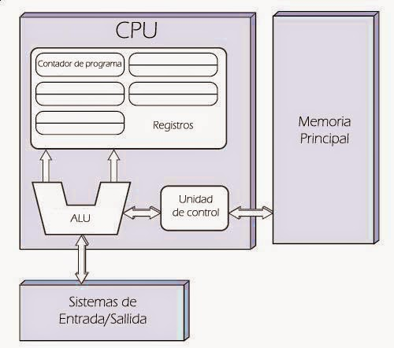
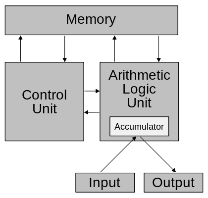
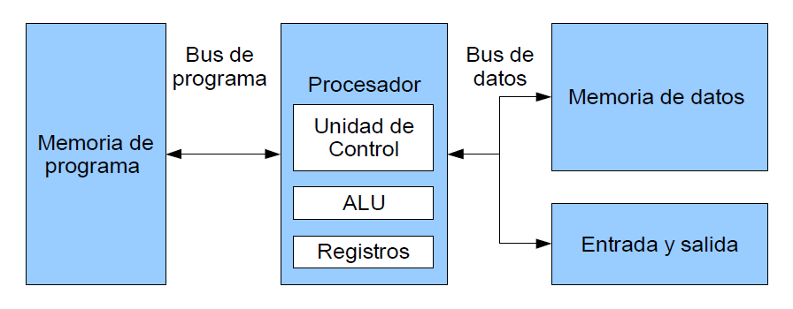

Modelo 1
“Arquitectura Von Newman"
Esta describe una arquitectura de diseño para un computador digital electrónico con partes que constan de una unidad de procesamiento que contiene una unidad aritmético lógica y registros del procesador, una unidad de control que contiene un registro de instrucciones y un contador de programa, una memoria para almacenar tanto datos como instrucciones, almacenamiento masivo externo, y mecanismos de entrada y salida.
 Esta arquitectura se basa en dos conceptos básicos:
1) Utilizan sistemas binarios: Simplifica la electrónica y da mayor inmunidad al ruido.
2) Almacena la secuencia de programa en memoria: Da mayor velocidad para procesar información.
La principal desventaja de esta arquitectura, es que el bus de datos y direcciones único se convierte en un cuello de botella por el cual debe pasar toda la información que se lee de o se escribe a la memoria, obligando a que todos los accesos a esta sean secuenciales. Esto limita el grado de paralelismo (acciones que se pueden realizar al mismo tiempo) y por lo tanto, el desempeño de la computadora. Este efecto se conoce como el cuello de botella de Von Newman.
Modelo 2
“Arquitectura Harvard"
Esta arquitectura surgió en la universidad del mismo nombre, poco después de que la arquitectura Von Newman apareciera en la universidad de Princeton. Al igual que en la arquitectura Von Newman, el programa se almacena como un código numérico en la memoria, pero no en el mismo espacio de memoria ni en el mismo formato que los datos. Por ejemplo, se pueden almacenar las instrucciones en doce bits en la memoria de programa, mientras los datos de almacenan en 8 bits en una memoria aparte.
El hecho de tener un bus separado para el programa y otro para los datos permite que se lea el código de operación de una instrucción, al mismo tiempo se lee de la memoria de datos los operados de la instrucción previa. Así se evita el problema del cuello de botella de Von Newman y se obtiene un mejor desempeño.
Regresar